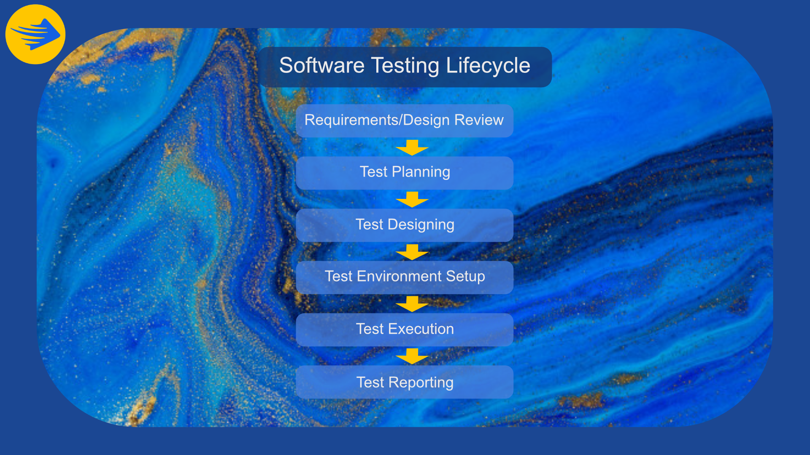

Project | Testing
Assignment Credit: Jaydyn Hoskings
Testing Overview
During the development of this project, there is an essential stage of product testing that needs to take place for the insurance of the quality of the product and therefore requires a process of testing that can ensure the quality and reduce the number of potential bugs. During our testing phase for our project, we decided to go with the standard alpha testing process which is implemented by many software development companies as its streamlined process provides a clean flow for bug detection and optimization.
Testing Phases
- The first phase of testing is done by the developer or group of developers of the software and their main goal is to find mind and glaring bugs or over-sights within the code or usability of the software and trying to reduce the frequency of bugs for the next step of the testing debugging of the site. The testers can be internal to the company or external teams dedicated to testing faults in the software, having another perspective of different aspects of your software and code can increase the likelihood of finding bugs that may have been missed during the internal developer testing. As the testing finish their search for any issues within the program, they will then give that information back to the developers and they will then implement the necessary changes and fixes to ensure that the final stage of testing which as a repeat of the first two steps, the internal developer testing is repeating with the newly implemented fixes, then another road of testing is done by the testers this is a highly used method within the software development field. Depending on the size of the product this testing life cycle may change and be modified to fit the needs of the product.
- Within the development lifecycle of a program testing can be performed at various stages throughout the development of the program and can be done after each stage of initial stages of pre development and review and into the further stages of testing and quality assurance before release of the product. Testing Is an essential part of the product life cycle and without it can cause major problems with user perception and publicity of the product due to faulty optimizations and bugs and can have a high chance of ruining a companies reputation without the implementation of a testing phase of the life cycle, under our risk assessment for this assignment we were aware of many products and their failures at launch so we put a faulty app on launch as a moderate risk to our assignment due to our implementation of a testing phase during the development of this product.

Software Development Chart Created by Noah & Jaydyn